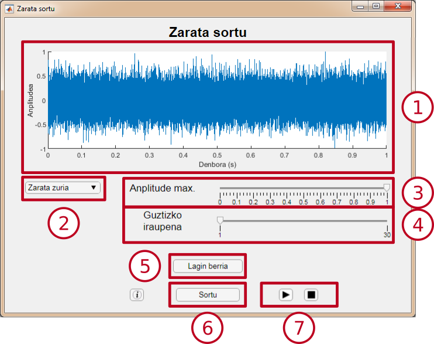

Zarata sortu
Modulu honek zarata mota desberdinak sortzeko aukera ematen du, anplitude maximoa aldatzeko aukerarekin.
Interfazea

- Aurrebista leihoa: Moduluak sortuko duen seinalea ikusteko aukera ematen du. Parametroren baten balioa aldatzean eguneratzen da.
- Zarata motaren hautagailua: Sortutako zarata mota hautatzeko aukera ematen du.
- Anplitude maximoko hautagailua: Sortutako zarataren anplitude maximoa hautatzeko aukera ematen du.
-
Iraupen-hautagailua: Seinalearen iraupena 1 eta 30 segunduen artean hautatzea ahalbidetzen du. Balioa kursorea mugitzen edo testu-kutxaren balioa aldatzen hautatu ahal da.
- "Lagin berria" botoia: Zarataren lagin aleatorio berri bat sortzen du.
- "Sortu" botoia: Beste bistaratze-leiho bat irekitzen du, hautatutako parametroak dituen seinale bat aztertzeko.
-
Erreprodukzio-botoiak: Audio-seinalearen erreprodukzioa kontrolatzea ahalbidetzen dute.
Zarata
Zarata ausazko balioa duten laginez osatutako seinale bat da.
-
Anplitude maximoa: Laginaren balioak barne hartzen dituen zenbaki-tartea.
Adibidez, 0.5-ko anplitude maximoa aukeratuz gero, lagin bakoitzaren balioa -0.5 eta 0.5 arteko ausazko zenbaki bat izango da.
-
Zarata mota: Hainbat zarata mota daude, espektro-potentziaren dentsitatearen arabera.
-
Zarata zuria: Zarata mota honek potentzia espektral-dentsitate laua eta uniformea du frekuentzia-tarte osoan zehar. Horrek esan nahi du frekuentzia guztietan potentzia espektral-dentsitatea bera duela, eta laginak elkar inkorrelatutak daudela. Hau da, lagin bakoitzaren balioa gainerako lagin guztien balioarekiko independentea da.
-
Zarata arrosa: Zarata honen potentzia espektral-dentsitatea frekuentziarekiko alderantziz proportzionala da. Horrek esan nahi du zarata horrek potentzia espektral-dentsitate handiagoa duela frekuentzia baxuetan, eta txikiagoa altuetan.
-
Zarata marroia: Bere potentzia espektral-dentsitatea frekuentziarekiko alderantziz proportzionala da, zarata arrosarekin gertatzen den bezala. Aurreko zarata-motarekiko aldea da frekuentzia altuetako potentzia espektrala 0 dela.